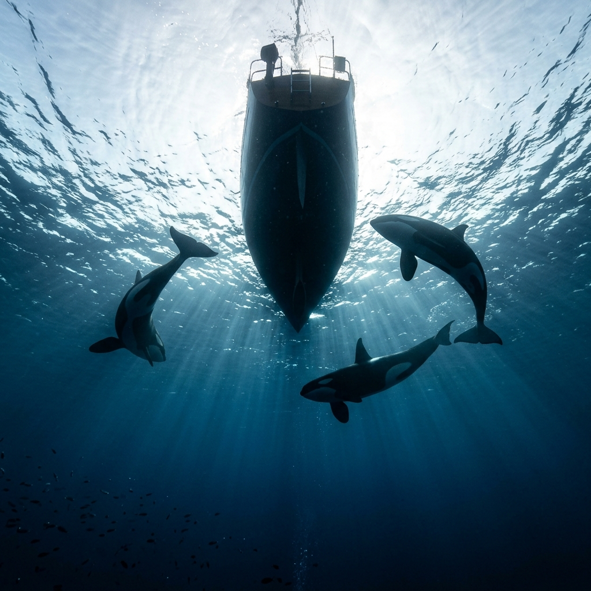

Since 2020, orcas in the waters between the Bay of Biscay and the Strait of Gibraltar have been interacting with sailing yachts. Sometimes they nudge the hull. Sometimes they damage the rudder. A few boats have sunk. The phenomenon gets a lot of press coverage, and skippers planning a transit through these waters want to know: what can I actually do to reduce my risk?
The Cruising Association, a UK-based sailing organisation, runs a crowdsourced survey where skippers can report both orca interactions and uneventful passages through the affected zone. Both types of report record the same details: boat length, antifoul colour, rudder type, sailing mode, speed, water depth, wind, sea state, time of day, and more.
We collected all 654 reports from their public API. 216 were incidents. 438 were uneventful. Then we built a statistical model to find which variables, if any, reliably distinguish the two groups.
The Approach: Comparing Two Groups
The core logic is simple. We have two piles of reports. In one pile, an orca showed up. In the other, it did not. Each report records a dozen or so details about the boat and conditions. If a variable's distribution looks different between the two piles, that variable might be associated with interactions.
For example, take antifoul colour. Among boats with black antifoul, 45% had an interaction. Among Coppercoat boats, only 17% did. That is a large distributional difference. It suggests antifoul colour matters.
Contrast that with speed. Both groups cluster around 5 to 7 knots. The distributions are nearly identical. Speed does not seem to distinguish the groups.
The tricky part is that these variables are correlated with each other. Black-antifoul boats might also be in deeper water. Is the antifoul effect real, or is it just a proxy for location? A simple comparison of one variable at a time cannot disentangle this. We need a model that considers all variables simultaneously.
A One-Paragraph Explanation of What the Model Does
We used a logistic regression, which is a standard tool for binary outcomes (something either happened or it did not). The model takes all the predictor variables as inputs and outputs a number between 0 and 1, which represents the predicted probability of an interaction. For each predictor, the model learns a coefficient: a number that tells you how much that predictor shifts the probability up or down, after accounting for all other predictors. A positive coefficient means "associated with more interactions." A negative one means "associated with fewer." A coefficient near zero means "this variable does not help distinguish the groups once you account for everything else."
Why Bayesian?
We used the Bayesian flavour of logistic regression rather than the classical (frequentist) version. The practical difference is that a Bayesian model gives us a full distribution for each coefficient, not just a single point estimate. Instead of saying "the depth effect is 0.84," it says "the depth effect is most likely around 0.84, with a 89% chance of falling between 0.59 and 1.10." This range is called the credible interval.
The other advantage of Bayesian analysis is that we can encode prior knowledge. This matters here because our dataset has a serious problem.
The Selection Bias Problem
In our dataset, 33% of reports are incidents. That does not mean 33% of yachts transiting the area get an orca interaction. People who had an interaction are far more likely to fill out the survey. The true rate is much lower.
If we naively fit the model to this dataset, the intercept (the baseline probability when all predictors are at their average values) will land somewhere around 33%. That is wildly wrong as an estimate of real-world risk. To fix this, we need an independent estimate of the true base rate.
The Fermi Estimation: How Many Yachts Actually Transit?
Enrico Fermi was a physicist famous for making reasonable estimates of quantities that seem impossible to pin down. "How many piano tuners are in Chicago?" You cannot look this up, but you can break it into smaller pieces that are each estimable, multiply them together, and get a useful ballpark.
We need two numbers: how many orca interactions happen per year, and how many yacht transits happen per year. The ratio gives the base rate.
The numerator: interactions per year
This is the easier number. The GTOA (Grupo Trabajo Orca Atlantica) tracks reported interactions. Their consolidated data, confirmed by CEMMA and various news sources, gives us:
| Year | Reported interactions |
|---|---|
| 2020 (Jul-Nov only) | ~52 |
| 2021 | ~197 |
| 2022 | ~207 |
| 2023 | ~186 |
| 2024 | ~125 |
| Total (Jul 2020 to 2024) | ~807 |
One important caveat: reporting completeness dropped from 88.5% in 2020 to 34% in 2024, so recent years likely undercount actual interactions. For a typical full year, ~150 to 200 reported interactions is a reasonable central estimate.1
The denominator: yacht transits per year
This is the hard number. No authority counts recreational yacht transits through the orca zone. We have to triangulate:
Fermi Estimation Breakdown
This gives us a base rate of roughly 150 to 200 interactions out of 5,000 to 10,000 transits, or about 2 to 3%. The uncertainty is large. It could be as low as 1% or as high as 5%. We encoded this as an informative prior on the model's intercept: a normal distribution centred at the value corresponding to 3%, with enough spread to cover the 1% to 7% range.
Is this estimate solid? No. The yacht.de "5%" figure is the only concrete anchor, and we do not know how they arrived at it. We ran a sensitivity analysis (more on this below) to check whether our conclusions depend on getting this number right.
What the Model Found
We fitted five progressively more complex models, adding predictors in stages. All five converged cleanly with no sampling problems. The primary model (M3) includes vessel characteristics, activity state, and environmental conditions. The full technical details, including model equations, priors, MCMC diagnostics, and the causal DAG, are documented in the technical methodology.
Four factors had coefficients whose 89% credible intervals did not cross zero. In plain language: the data provides strong evidence that these factors are associated with interaction risk, even after accounting for everything else in the model.
The variable we had to rethink: time of day
Time of day initially appeared to be the strongest predictor. Under our first encoding, night passages showed an 85% interaction rate versus 26% for daytime. The model estimated night was 7.8 times riskier. But the finding did not survive scrutiny.
The core problem is that the two groups measure time differently. Incident reports capture a single moment: the skipper records "Day" or "Night" when the interaction happened. Uneventful passage reports record a duration: the skipper enters a start time and end time, which might span 8 hours of daylight sailing or 30 hours covering day and night. This means we know when interactions happen but not when the boats that had interactions were actually in the water. And we know when uneventful boats were in the water but cannot assign them to a single time period.
Different encodings of this ambiguous variable produce opposite conclusions:
| Encoding | Night n | Night incidents | Night rate | Day n | Day incidents | Day rate |
|---|---|---|---|---|---|---|
| A: Multi-period passages → day | 76 | 65 | 85.5% | 578 | 151 | 26.1% |
| B: Any mention of "Night" → night | 142 | 30 | 21.1% | 512 | 186 | 36.3% |
| C: Split into exposure windows | 177 | 48 | 27.1% | 598 | 168 | 28.1% |
Encoding A says night is extremely dangerous. Encoding B says day is riskier. Encoding C, which splits multi-period passages into separate day and night exposure windows, says there is no difference at all. Fitting the full Bayesian model under A and B produced a night coefficient that flipped sign entirely.
But we can do better than these binary encodings. The uneventful passages have actual start and end timestamps, and we can compute how many yacht-hours were spent in daylight versus darkness using solar position calculations. This gives us the exposure distribution: the denominator we need. The incidents have exact timestamps too, so we know when each interaction occurred.
The result: uneventful passages spent 35% of their total yacht-hours in darkness. But only 23% of incidents happened at night. We fitted a Bayesian Poisson rate model to quantify this: the incident rate is 11.8 per 1,000 yacht-hours at night versus 20.9 during the day. The posterior rate ratio is 0.56 (89% CI: 0.43 to 0.72), meaning roughly half as many incidents per yacht-hour at night compared to daytime, with 100% posterior certainty that night is safer. The result is insensitive to the prior.
This makes some intuitive sense. Orcas are visual predators. They may be more active, or more likely to notice and approach a boat, during daylight hours. Alternatively, it could reflect differences in sailing patterns: night passages may follow different routes or be further offshore.
A natural follow-up: do the other risk factors behave differently at night? If orcas rely on vision to spot boats, the visual contrast of black antifoul might matter less in darkness. We extended the Poisson rate model to cross-tabulate time of day with antifoul colour and sailing mode, computing separate incident rates per yacht-hour for each combination:
| Factor | Effect during day | Effect at night | Interaction ratio | Interpretation |
|---|---|---|---|---|
| Black antifoul (vs other) | 2.1× (89% CI: 1.6 to 2.6) | 2.4× (89% CI: 1.5 to 3.5) | 1.2× (89% CI: 0.7 to 1.8) | Same effect day and night |
| Motoring (vs other) | 4.1× (89% CI: 3.1 to 5.3) | 5.5× (89% CI: 3.2 to 8.5) | 1.4× (89% CI: 0.8 to 2.2) | Same effect day and night |
The interaction ratios are close to 1.0 and both credible intervals comfortably span it. Black antifoul doubles the incident rate regardless of whether it is day or night. If the mechanism were purely visual, we might expect the effect to weaken in darkness. The fact that it does not suggests either the mechanism is not visual, or orcas detect boats through other senses (acoustics, hydrodynamics) where colour still correlates with some relevant property.
Because these effects are stable across time of day, the calculator below applies the day/night rate ratio as a uniform scaling factor on top of the logistic regression. This is valid precisely because the interaction terms are negligible.
We dropped time of day from the logistic regression model because the binary day/night variable cannot be reliably encoded for both groups simultaneously. The exposure-based analysis above is a separate and cleaner calculation. The remaining model coefficients barely changed when we removed it, confirming it was not confounding the other findings.
The strong effects
Autopilot off is the single strongest predictor: turning off the autopilot is associated with 3.0 times the odds of interaction (or equivalently, autopilot on cuts the odds to a third). The MBA study actually found autopilot increased risk. Our model disagrees. One might suspect a confound: perhaps autopilot users sail further offshore, away from hotspots. We checked with a Bayesian comparison of group means: autopilot-on boats are slightly shallower (96% posterior probability) but the difference in distance from land is uncertain (92%, credible interval spans zero). The controlled effect (OR 3.0) is actually larger than the raw effect (OR 2.3), meaning these covariates were suppressing the autopilot signal, not creating it. The mechanism remains unclear.
Water depth is the second strongest. Interactions are concentrated in deeper water (200m+), and rare inside the ~20m coastal contour. Each standard deviation increase in depth category corresponds to a 2.6x increase in odds. In this region the orcas are mostly out in deeper water (following bluefin tuna), and the shallow coastal strip acts as a refuge they tend not to pursue boats into. This is exactly why the standard advice is to head for shallow water near the coast. (Strictly, depth is standing in for being out in the orca zone rather than the depth itself, since we couldn't measure each passage's location directly; but for route planning the rule is simply: stay shallow and close in.)
Motoring carries 1.9 times the odds of an interaction compared to motorsailing or sailing. The MBA (Marine Biological Association) published a similar finding in 2024, noting that motors produce underwater noise at frequencies orcas can hear.2
Black antifoul paint is associated with 1.5 times the odds of interaction compared to the average. The contrast with Coppercoat is striking: black antifoul carries 2.6 times the odds of Coppercoat, with 99.9% posterior certainty. The mechanism is unclear. It could be visual (orcas seeing a dark underwater surface), acoustic (different paint textures producing different hydrodynamic noise), or simply a confound we have not identified.
Validating the antifoul finding
The black antifoul result surprised us. The Cruising Association has collected this data for years, and researchers have generally dismissed antifoul colour as coincidental. A web search turns up the consensus view: "no scientific evidence supports the theory that the colour of antifouling paint acts as a trigger." The MBA's 2024 logistic regression did not include antifoul colour as a predictor.
So we ran a thorough validation. First, the raw numbers. This table shows how antifoul colours are distributed across the two groups:
| Antifoul colour | Incidents | Uneventful | Interaction rate | Share of incidents | Share of uneventful |
|---|---|---|---|---|---|
| Black | 97 | 121 | 44.5% | 44.9% | 27.6% |
| Blue | 57 | 134 | 29.8% | 26.4% | 30.6% |
| Coppercoat | 16 | 78 | 17.0% | 7.4% | 17.8% |
| Red | 15 | 35 | 30.0% | 6.9% | 8.0% |
| White | 14 | 44 | 24.1% | 6.5% | 10.0% |
The last two columns are the distributional comparison the model picks up. Black antifoul makes up 44.9% of incident reports but only 27.6% of uneventful passages. That 17 percentage point gap is large. Coppercoat goes the other direction: 7.4% of incidents vs 17.8% of uneventful. Blue is nearly proportional between the two groups.
This is not a small-sample fluke. Black is the most common antifoul in the dataset (218 of 654 reports), so we have plenty of observations on both sides.
We then checked for confounds. A Bayesian comparison of group means shows that black-antifoul boats sail in deeper water (+0.31 SD, 89% CI: +0.17 to +0.44) and farther offshore (+0.30 SD, 89% CI: +0.17 to +0.43), both with 100% posterior certainty. Since depth and distance are independent risk factors, part of the raw Black effect is explained by where those boats sail, not the paint itself. The raw odds ratio is 3.9 (Black vs non-Black, unadjusted). After the multivariate model controls for depth, distance, sailing mode, autopilot, and everything else, the posterior odds ratio drops to 1.5 (89% CI entirely above 1.0). The confounds explain some of the raw gap, but a credible effect remains.
As a final check, we fitted a single-predictor model with only antifoul colour and no other variables. The Black vs Coppercoat contrast came out at +1.16 on the log-odds scale (89% CI: +0.72 to +1.60), with 100% posterior certainty that Black exceeds Coppercoat. The full model gives +1.00 (89% CI: +0.52 to +1.51), slightly smaller because depth and distance absorb some of the effect. Both models agree on the direction and strength.
Why has this been dismissed? Probably because prior analyses looked at whether the proportion of Black antifoul among incidents matches "the general mix of boat colours in those waters." That framing asks the wrong question. It compares incidents to the general fleet. We compare incidents to uneventful passages through the same waters, reported through the same survey, which is a much cleaner comparison. The distributional gap is clear.
We still cannot say Black antifoul causes interactions. Possible explanations include visual contrast underwater, differences in hydrodynamic noise from different paint textures, or an unmeasured confound. The data shows a robust statistical association. The mechanism remains unknown.
The non-effects
Several variables that sailors commonly discuss showed no credible association with interactions:
| Factor | Coefficient | 89% CI | Verdict |
|---|---|---|---|
| Boat length | +0.04 | [-0.13, +0.21] | No effect |
| Speed | -0.06 | [-0.22, +0.11] | No effect |
| Wind speed | -0.05 | [-0.24, +0.14] | No effect |
| Sea state | -0.16 | [-0.35, +0.03] | Marginal (calmer seas trend toward more interactions) |
| Distance from land | +0.21 | [-0.02, +0.44] | Marginal (farther offshore trends higher) |
| Rudder type | All categories overlap | No effect | |
The non-effects are just as informative as the effects. Many skippers believe speed matters ("go faster to escape the interaction zone"). The data does not support this. Both groups travel at similar speeds, and the model confirms that speed provides no distinguishing information once other variables are accounted for.
Interactive Risk Calculator
This calculator uses the fitted model coefficients to compute a predicted probability of interaction. The key addition is the base rate slider at the top. It applies the Fermi estimate we derived earlier to correct for the selection bias in the dataset.
The correction works like this. In a logistic regression, the slope coefficients (how much each variable shifts the odds) are not affected by the ratio of cases to controls in the training data. They are the same whether 33% or 2% of the dataset are incidents. The intercept, on the other hand, absorbs the sampling ratio and needs to be shifted. The standard correction (King and Zeng, 2001) computes an offset from the ratio of the true base rate to the sample base rate, applied in log-odds space. Move the slider to see how different base rate assumptions change the absolute numbers while leaving the relative ordering of scenarios unchanged.
Does the Fermi Estimate Matter? A Sensitivity Check
We were honest earlier: the base rate estimate (2 to 3%) rests on shaky ground. So we re-fitted the model four times, each with a different assumption about the true base rate:
| Prior assumption | Base rate | Depth effect | Motoring effect | Black antifoul |
|---|---|---|---|---|
| Conservative | ~1% | +0.84 *** | +1.14 *** | +0.71 *** |
| Central (our default) | ~3% | +0.84 *** | +1.04 *** | +0.73 *** |
| Aggressive | ~5% | +0.83 *** | +0.98 *** | +0.72 *** |
| Flat (no prior info) | uninformative | +0.82 *** | +0.58 *** | +0.68 *** |
The depth coefficient barely moves. The motoring and antifoul effects shift somewhat, but all remain statistically credible (marked ***) across every prior, including the completely uninformative one.
The conclusion: the relative effects are robust. Our weak Fermi estimate affects the absolute risk predictions (the numbers the calculator shows) but not the directional findings about which factors increase or decrease risk.
What This Means for a Skipper
Based on the posterior evidence, if you are transiting orca-affected waters:
Sail if you can. Motoring carries 2.8 times the odds of sailing or motorsailing. If conditions allow, turn off the engine.
Consider your antifoul colour. Black antifoul is associated with double the interaction rate. Coppercoat appears protective. If you are re-antifouling before a transit, this data point is worth considering, though we cannot be certain the colour itself is the cause.
Do not worry too much about speed, boat length, or rudder type. The model found no credible effect for any of these.
Caveats
This is an observational analysis of self-reported data, not a controlled experiment. Correlation is not causation. The depth effect is best read as a proxy for being out in the orca zone rather than an effect of depth itself. For avoidance that distinction doesn't matter (stay in the coastal shallows), but it means you shouldn't over-read the depth coefficient mechanistically. The antifoul effect could be confounded by something we did not measure. Geographic location is the biggest uncontrolled variable: we do not know where the uneventful passages occurred, only where the incidents did.
The autopilot result is the strongest in the model and the hardest to interpret, so treat it as provisional. It also runs opposite to the earlier Marine Biological Association study, which found autopilot use associated with higher risk. There are three ways to read it. It is real: the noise of an engaged autopilot might deter some orcas, a possibility the Cruising Association is actively monitoring, in which case it is a genuinely useful and surprising finding. It is a statistical artifact on our side: this is unlikely, because the effect survives multivariate adjustment and prior-sensitivity testing, and the controlled odds ratio is larger than the raw one, so the other variables were masking the signal rather than inventing it. It is a recording artifact: the CA's first instruction when an interaction begins is to disconnect the autopilot and let the wheel run free, and a rudder strike can disable it anyway, so an incident report marked "off" might describe the response to the encounter rather than the state before it. We think this third reading is the weakest, because the survey asks a bare "On/Off" with no timing and the natural way to answer is to give the state when the interaction began, which is what many of the incident narratives describe. The current data cannot settle it, so read this coefficient with more caution than the others.
The absolute risk numbers from the calculator should be taken as rough ordinal comparisons ("this scenario is riskier than that one"), not as precise probabilities you can rely on for planning.
With 654 observations and 18 predictors, we are not swimming in data. Some categories (green antifoul, hove-to) have fewer than 20 observations. The model appropriately expresses large uncertainty for these sparse categories.
Despite these limitations, four independent factors (depth, motoring, antifoul, autopilot) showed credible effects that survived multiple-variable adjustment, prior sensitivity testing, and convergence diagnostics. A fifth factor (time of day) appeared strong but turned out to be an artifact of how the data was recorded. That kind of finding, where a careful check overturns an initial result, is arguably the most useful contribution of a structured analysis.
Notes and Sources
- GTOA/CEMMA consolidated figures (2020 to 2024). Total of ~807 reported interactions. Reporting completeness estimates from Cruising Association annual summaries.
- Moore, L. (2024). "Orca interactions with sailing yachts: a logistic regression analysis of 481 recorded voyages." Marine Biological Association. Key findings: depth (20 to 40m), motor use, and autopilot as significant predictors.
- Data source: Cruising Association Orca Survey API (apinl.theca.org.uk). 654 total reports collected June 2026.
- Analysis code and data preparation: Clojure on the JVM with CmdStan (NUTS), following the workflow described in McElreath, R. (2020). Statistical Rethinking (2nd ed.), CRC Press.